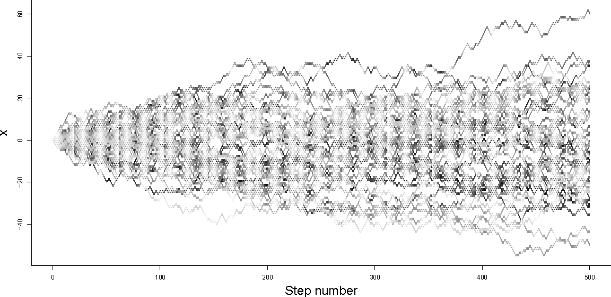
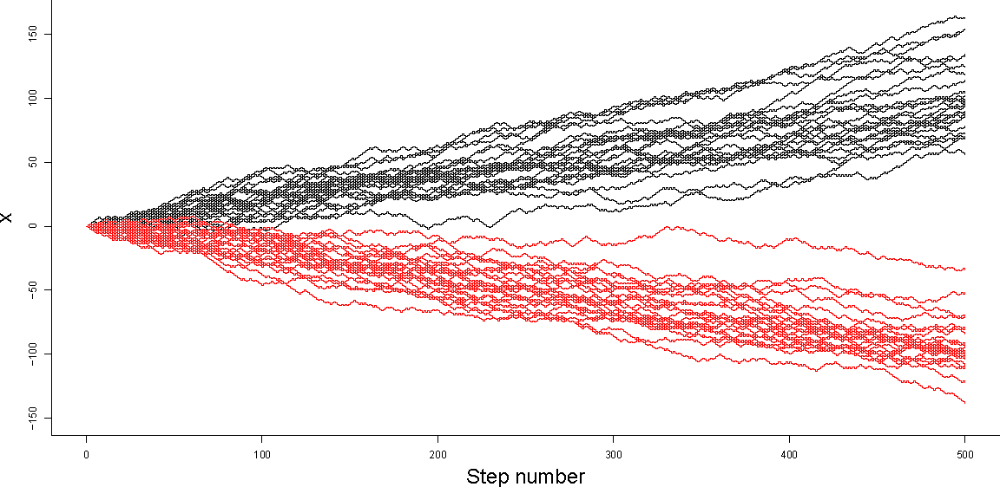
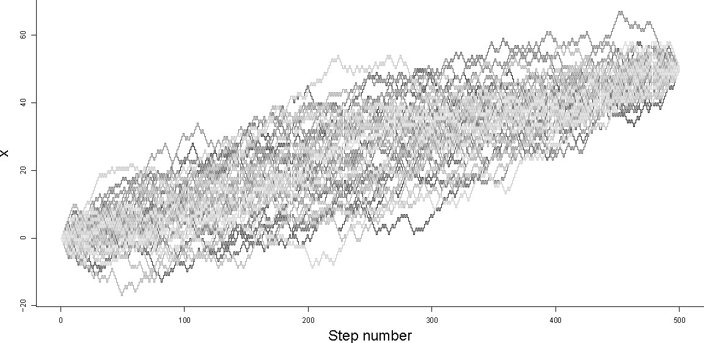

Constrained Random Walks
The video above is made from two, constrained, one-dimensional random walks through the frames of a video clip. The constraint here is that both output videos begin and end with the same frame from the original clip. Both videos have same number of output frames, but take different, random paths through the original set of frames. In this article, I'll outline how to generate such constrained random walks. Note that, for carrying out a walk in video frame space, it is important to use a discrete random walk and not a Gaussian random walk (or Weiner process). This constrained, discrete random walk process is probably closely related to a Brownian bridge.
Simulating an unconstrained, unbiased random walk
First, imagine we want to simulate how a variable $x$ changes during $n$ steps of a regular random walk. To begin with, we can specify a starting value: $x_0$. For any step $i$, we want to either increase $x_i$ by one, or decrease $x_i$ by one with equal probability. To make this decision randomly, we can generate a uniformly distributed real random number, between $0$ and $1$ ($~U(0,1)$). If the random number is greater than $0.5$ we can set $x_{i+1}=x_i+1$, otherwise we can set $x_{i+1}=x_i-1$. If we do this for all $i=0,...,n-1$ then our simulation is complete. Since this simulation is random or stochastic, results are likely to be different for each simulation run.

Figure 1 - Random walks 50 unconstrained random walks, starting from $x_0=0$. $n=500$
We can see from the plot above that the variability in the value of $x$ across an ensemble of simulations increases with step number $n$. In particular, note that $x$ has the widest range of values at the final step of the walk ($x_n$).
Simulating a biased random walk
If we wanted to bias the random walk in a particular direction, we could use a slightly different criterion for selecting whether to increase or decrease $x$ at each step. We can define the probability of decreasing $x$ at each step to be $\theta$. To simulate step $i$ we can generate a $U(0,1)$ random number as before, but this time if the random number is greater than $theta$, we set $x_{i+1}=x_i+1$, otherwise we can set $x_{i+1}=x_i-1$.
Figure 2 - Biased Random walks 25 positively biased random walks (black, $\theta=0.4$) and 25 negatively biased random walks (red, $\theta=0.6$) all starting from $x_0=0$. $n=500$.
Simulating a constrained random walk
Finally, we can think about how to adapt the bias $\theta$ at each step in order to constrain our random walk so that it hits a specific target $x_{targ}$ after $n$ steps.
During a biased random walk of $n$ steps, we expect there to be $n\theta$ increasing steps and $n(1-\theta)$ decreasing steps. If we define $\Delta x=x_n-x_0$ (the observed change in $x$ after $n$ simulated steps), we can say that the expected value of $\Delta x$ is the expected number of increasing steps, less the expected number of decreasing steps:
$E(\Delta x) = n(1-\theta)-n\theta$By choosing $x_{targ}$, we specify a value that we would like $\Delta x$ to take. We can adjust $\theta$ in order to maximise the probability of hitting $x_{targ}$ after $n$ steps:
$x_{targ}-x_0 = n(1-\theta)-n\theta\\ \Rightarrow \theta = \frac{1-\frac{x_{targ}-x_0}{n}}{2}$However, as we can see from the wedge shape of the (e.g. black) simulations in Figure 2 above, choosing a single value of $\theta$ will not guarantee that we actually hit our target. Fixing $\theta$ at an appropriate value only makes hitting the target more likely. To constrain the simulation so that it converges to $x_{targ}$ exactly, we need to recalculate $\theta$ after every step. We can do this by resetting $x_0$ in the expression above to the current value of $x$, and decreasing $n$ to represent the number of steps remaining, for each step in the simulation:
$\theta_i=\frac{1-\frac{x_{targ}-x_i}{n-i}}{2}$In the plot below, we can see that the random paths in the ensemble all start with $x_0=0$ and finish with $x_n=50$ after 500 steps ($n=500$), that the paths are diverse, and that the ensemble of paths plotted has a kind of left-right symmetry (a sausage shape), instead of the wedge shape of the unconstrained walks in Figure 1.
Figure 3 - Constrained Random walks 50 constrained random walks starting from $x_0=0$ and ending at $x_n=50$. $n=500$.
Below is some R code which demonstrates simulating unconstrained, unbiased random walks, biased random walks and constrained random walks (corresponding to Figures 1,2 and 3). It is worth noting that in order for it to be possible to hit $x_{targ}$, after taking $n$ steps from $x_0$, $x_{targ}-x_0$ and $n$ must both be odd or both be even. However, the algorithm detailed below will still converge to one of the two next-nearest final values if this is not the case.